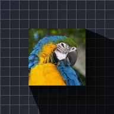

Ombre radiale

Projette de longues ombres depuis les parties opaques du calque, en s’éloignant d’un point lumineux.
Réglages
| Réglage | Type | Plage | Par défaut |
|---|---|---|---|
| Lumière | Point (X, Y) | De -2 à 3 | 0.3, 0.2 |
| Longueur | Nombre | De 0 à 5 | 0.25 |
| Couleur | Couleur | – | #000000 |
| Alpha | Nombre | De 0% à 100% | 10% |
| Fondu | Nombre | De 0% à 100% | 0% |